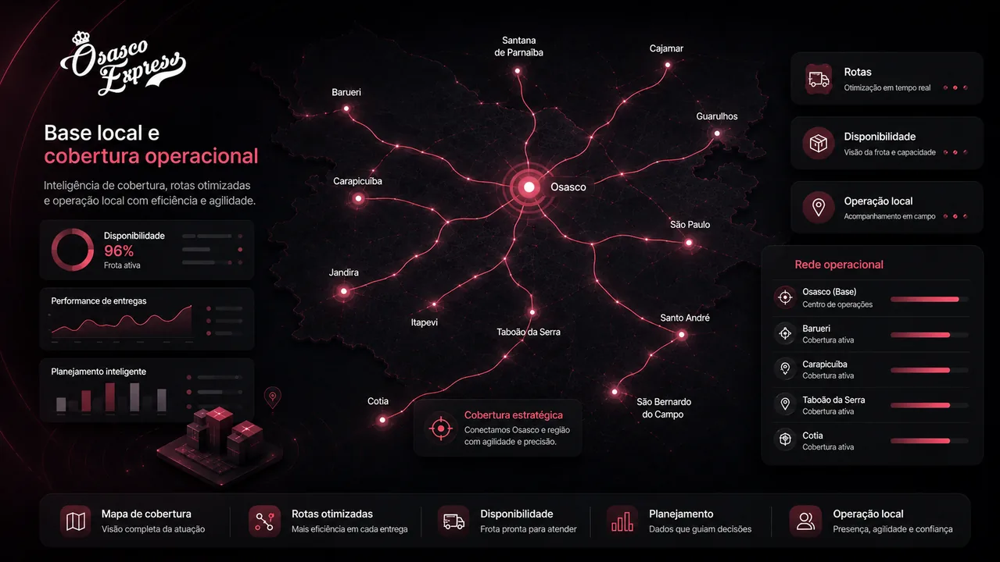

Cobertura operacional
Parceiros autônomos conforme demanda, região, horário e viabilidade.
Estruturamos operações de entrega para restaurantes, transportadoras, e-commerces, marketplaces, farmácias, clínicas, comércios e empresas locais que precisam de mais previsibilidade, suporte humano e capacidade operacional.
Quando a operação cresce, a entrega passa a exigir mais do que contatos avulsos. É preciso organizar disponibilidade, cobertura, comunicação, despacho, acompanhamento e continuidade.
Parceiros autônomos conforme demanda, região, horário e viabilidade.
Apoio ao fluxo entre pedido, preparo, separação, expedição e entrega.
Atendimento para acompanhar a operação quando a demanda exige resposta.
Proposta construída com base em dados operacionais.

Cada empresa tem uma rotina diferente. Avaliamos volume, horários de maior demanda, região, raio de atendimento, tipo de entrega, canais de venda, tempo de preparo, recorrência, urgência e necessidade de cobertura.
A Osasco Express não atua apenas no acionamento de entregadores. A operação combina busca ativa de parceiros autônomos, agenda digital, tecnologia própria, suporte humano e acompanhamento.
Reforço de rotas, última milha e demandas recorrentes.
Entregas locais e apoio à expedição.
Delivery próprio, WhatsApp, cardápio digital e plataformas.
Entregas com cuidado, rotina e previsibilidade.
Coletas, documentos, pequenos volumes e rotas.
A agenda digital organiza disponibilidade e aceite de oportunidades por parceiros autônomos. A tecnologia organiza dados. A equipe acompanha a realidade da operação.
Não. Estruturamos operação com diagnóstico, base de parceiros autônomos, agenda digital, suporte humano e acompanhamento.
Avaliamos relatórios ou dados básicos da operação para indicar o melhor modelo.
Demandas em regiões próximas podem ser avaliadas conforme rota, horário, volume e viabilidade.
Solicite um diagnóstico gratuito.